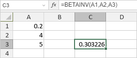

BETAINV funkcija
Funkcija BETAINV je jedna od statističkih funkcija. Koristi se za vraćanje inverzne kumulativne funkcije verovatnoće beta raspodele za zadatu beta raspodelu.
Sintaksa
BETAINV(probability, alpha, beta, [A], [B])
Funkcija BETAINV ima sledeće argumente:
| Argument | Opis |
|---|---|
| probability | Verovatnoća povezana sa beta raspodelom. Numerička vrednost veća od 0 i manja ili jednaka 1. |
| alpha | Prvi parametar raspodele, numerička vrednost veća od 0. |
| beta | Drugi parametar raspodele, numerička vrednost veća od 0. |
| A | Donja granica intervala za probability. Ovo je opcioni parametar. Ako se izostavi, koristi se podrazumevana vrednost 0. |
| B | Gornja granica intervala za probability. Ovo je opcioni parametar. Ako se izostavi, koristi se podrazumevana vrednost 1. |
Napomene
Kako primeniti funkciju BETAINV.
Primeri
Slika ispod prikazuje rezultat koji vraća funkcija BETAINV.
